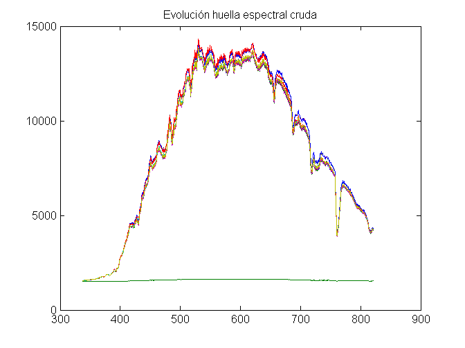
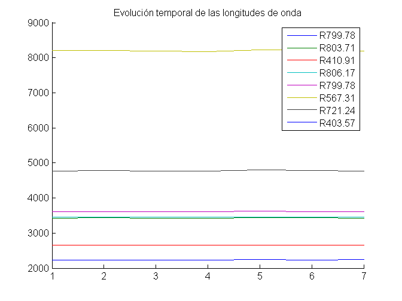
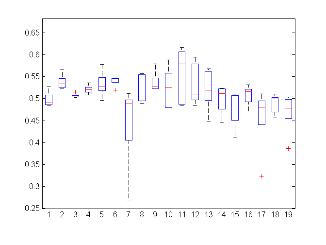
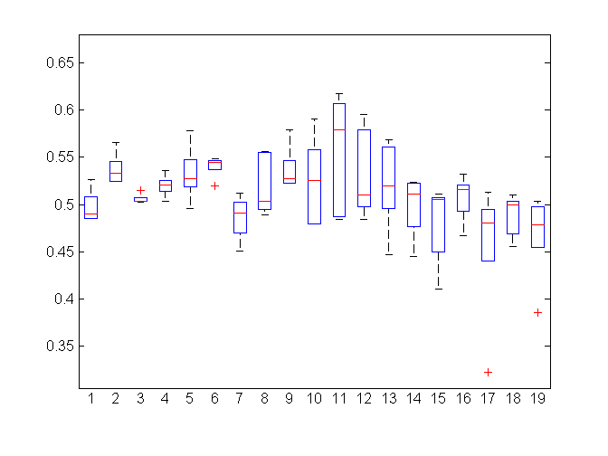

Informe calidad Radioespectrómetro
Contents
- Información sobre el vuelo
- Calibración inicial del blanco en ambos sensores
- Evolución de las medidas del sensor GND durante el vuelo
- Evaluación de longitud de onda R670 en crudo
- Evaluación de longitud de onda R670 filtrando datos
- Evaluación de longitud de onda R780 en crudo
- Evaluación de longitud de onda R780 filtrando datos

Información sobre el vuelo
- Nombre de la misión: Vuelo 1 Algerri Balaguer
- Hora solar de inicio / final: 13:25:37 / 13:32:14
- Observaciones meteorológicas: Soleado
Calibración inicial del blanco en ambos sensores
Huellas espectrales de la placa de calibración blanca para los sensores GND y AIR:
Evolución de las medidas del sensor GND durante el vuelo
  Evaluación de longitud de onda R670 en crudo
Evaluación de longitud de onda R670 filtrando datos
Se han sustituido dos valores por las medias correspondientes a sus puntos:
- Primer valor del quinto punto: Más del doble de la media en el punto, posible vibración del drone
- Último valor de la muestra (punto 19): Posiblemente se trate de un movimiento del drone que hizo apuntar hacia el suelo (marrón, alto contenido de rojo en comparación a la vegetación).
Se puede ver que aún así hay valores fuera de la media, pero se mantiene un error aceptable en las muestras de cada punto
| ID punto | Máximo de la muestra | Mínimo de la muestra | Media de la muestra | Rango |
|---|---|---|---|---|
| 1 | 0.0266357 | 0.0230807 | 0.0253212 | 0.003555 |
| 10 | 0.0277029 | 0.0252807 | 0.0267621 | 0.00242226 |
| 11 | 0.0270007 | 0.0268209 | 0.0269254 | 0.000179846 |
| 12 | 0.0271415 | 0.0252879 | 0.0261885 | 0.00185358 |
| 13 | 0.05641 | 0.0249273 | 0.0338479 | 0.0314827 |
| 14 | 0.0264551 | 0.0244084 | 0.0249614 | 0.00204668 |
| 15 | 0.0243542 | 0.0191746 | 0.022759 | 0.00517968 |
| 16 | 0.0278877 | 0.021886 | 0.0251434 | 0.00600173 |
| 17 | 0.0305633 | 0.0263023 | 0.0280563 | 0.00426101 |
| 18 | 0.0281613 | 0.0250427 | 0.0261726 | 0.00311863 |
| 19 | 0.0297728 | 0.024435 | 0.0272441 | 0.00533772 |
| 2 | 0.0281389 | 0.0241914 | 0.0258864 | 0.00394755 |
| 20 | 0.0272478 | 0.0237532 | 0.025238 | 0.00349464 |
| 21 | 0.0278569 | 0.0236922 | 0.0265632 | 0.0041647 |
| 22 | 0.0268147 | 0.0239805 | 0.0248955 | 0.00283424 |
| 3 | 0.0264724 | 0.0225017 | 0.0248339 | 0.00397068 |
| 4 | 0.0248851 | 0.0205787 | 0.0237208 | 0.00430647 |
| 5 | 0.0250191 | 0.0211904 | 0.0233549 | 0.00382862 |
| 6 | 0.375313 | 0.0232227 | 0.09407 | 0.35209 |
Evaluación de longitud de onda R780 en crudo
Evaluación de longitud de onda R780 filtrando datos
Se han sustituido dos valores por las medias correspondientes a sus puntos:
- Primer valor del séptimo punto: Más de la mitad de la media en el punto, posible vibración del drone
Se puede ver que aún así hay valores fuera de la media, pero se mantiene un error aceptable en las muestras de cada punto
| ID punto | Máximo de la muestra | Mínimo de la muestra | Media de la muestra | Rango |
|---|---|---|---|---|
| 1 | 0.526775 | 0.485266 | 0.498013 | 0.0415085 |
| 10 | 0.565705 | 0.524242 | 0.537492 | 0.0414626 |
| 11 | 0.515412 | 0.502945 | 0.506001 | 0.0124672 |
| 12 | 0.536347 | 0.50361 | 0.520197 | 0.0327372 |
| 13 | 0.578363 | 0.495768 | 0.533135 | 0.0825957 |
| 14 | 0.548803 | 0.519687 | 0.540217 | 0.0291156 |
| 15 | 0.512134 | 0.269121 | 0.442799 | 0.243013 |
| 16 | 0.556575 | 0.489373 | 0.520041 | 0.0672014 |
| 17 | 0.579111 | 0.522328 | 0.537527 | 0.056783 |
| 18 | 0.590627 | 0.479401 | 0.524498 | 0.111226 |
| 19 | 0.617422 | 0.484584 | 0.55473 | 0.132838 |
| 2 | 0.595316 | 0.484287 | 0.533193 | 0.111029 |
| 20 | 0.568555 | 0.446787 | 0.521113 | 0.121768 |
| 21 | 0.523846 | 0.445003 | 0.498101 | 0.0788428 |
| 22 | 0.511026 | 0.410464 | 0.479387 | 0.100562 |
| 3 | 0.531824 | 0.467445 | 0.506896 | 0.0643781 |
| 4 | 0.513083 | 0.32273 | 0.457179 | 0.190353 |
| 5 | 0.510078 | 0.455754 | 0.488078 | 0.0543244 |
| 6 | 0.503695 | 0.386031 | 0.468437 | 0.117664 |